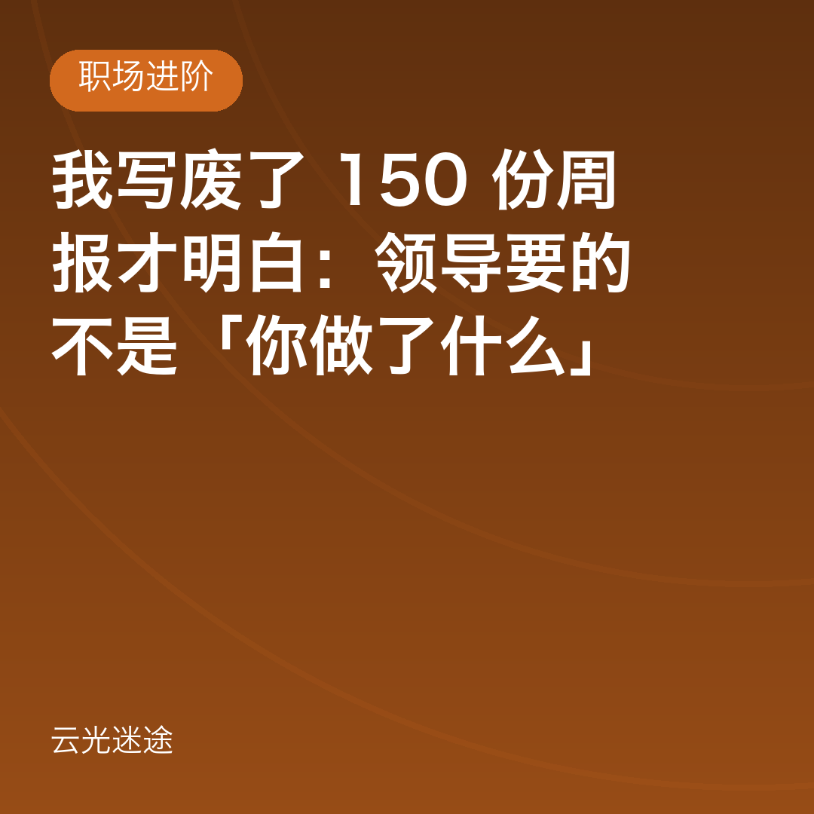
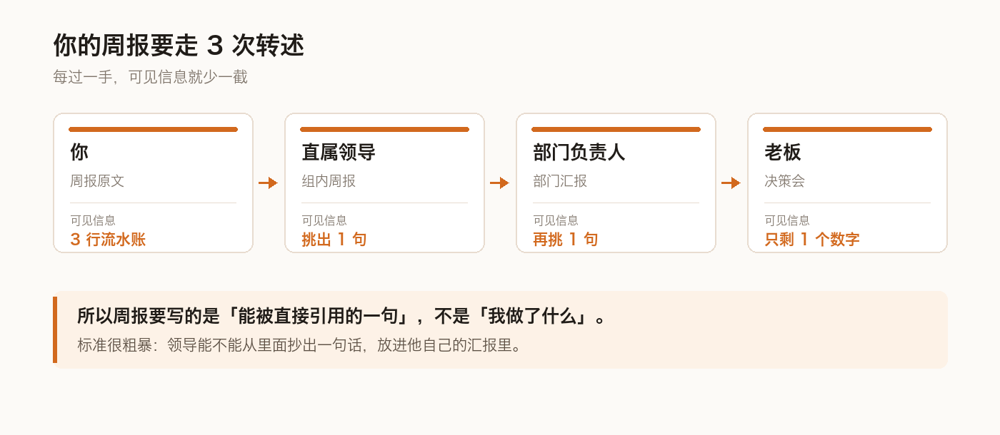

| 写法 | 例子 | 能否被引用 |
|---|---|---|
| 流水账 | 本周修复了 3 个线上问题 | 不能，信息量为 0 |
| 半成品 | 优化了订单查询性能 | 不能，没有对比 |
| 可引用 | 订单列表 P99 从 1.8s 降到 420ms，影响日均 12 万次请求 | 能，直接进周会 |
二是别只报风险不给方案（「存在风险，请领导支持」），至少给两个选项，让他做选择而不是出题。


| 写法 | 例子 | 能否被引用 |
|---|---|---|
| 流水账 | 本周修复了 3 个线上问题 | 不能，信息量为 0 |
| 半成品 | 优化了订单查询性能 | 不能，没有对比 |
| 可引用 | 订单列表 P99 从 1.8s 降到 420ms，影响日均 12 万次请求 | 能，直接进周会 |
7036cd430c00 · 生成于 2026-11-11T18:47:16+08:00md2wx.py --sheet，否则提交的是旧版本。